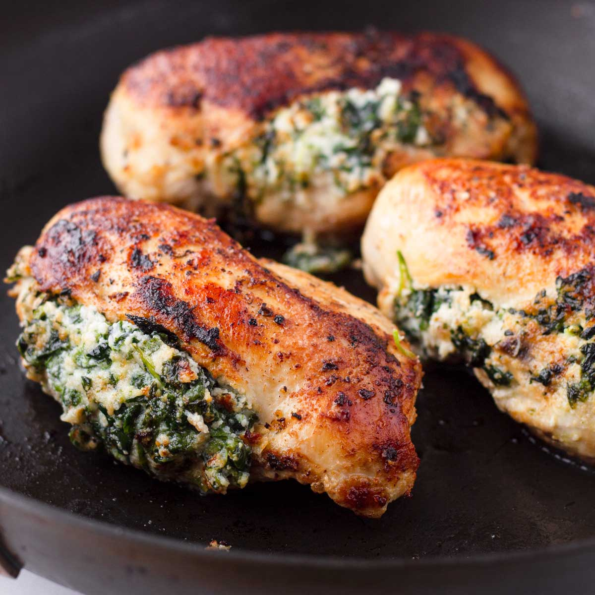

Spinach Stuffed Chicken Recipe

Description
Nothing get's my family more excited for dinner time than the smell of these spinach stuffed chicken breasts. This chicken dinner is suprisingly simple and easy to make while still being able to wow those at your dinner table.
These chicken breasts are also the perfect main for a low carb meal. We typically pair it with a healthy side like twice backed spaghetti squash, making this meal prep an easy oven-only sort of dinner.
Ingredients
- 4 chicken breast
- 1 TBS olive oil
- 1 tsp paprika
- 1 tsp salt
- 1/4 tsp garlic powder
- 1/4 tsp onion powder
- 4 oz cream cheese
- 1/4 cup grated parmesan
- 2 TBS mayonnaise
- 1 1/2 cup chopped fresh spinach
- 1 tsp minced garlic
- 1/2 tsp red pepper flakes
Steps
- Preheat oven to 375 degrees.
- Place chicken breasts on a cutting board and drizzle with oil.
- Add the paprika, salt, garlic powder, and onion powder to a small bowl and stir to combine. Sprinkle evenly over both sides of the chicken breasts.
- Use a sharpknife to cut a pocket into the side of each chicken breast. Set chicken aside.
- Add cream cheese, parmesan, mayonnaise, spinach, garlic, and red pepper flakes into a small mixing bowl and stir well to combine.
- Spoon the spinach mixture into each chicken breast evenly.
- Place the chicken breast in a 9x13 baking dish. Bake, uncovered, for 25-30 minutes or until chicken is cooked through.
- Allow chicken to rest for five minutes, then serve. Chicken can last up to 3 days in the fridge for leftovers.